컴퓨터응용밀링기능사 (2012-02-12 기출문제)
1과목: 기계재료 및 요소
1. 공구용 재료에 요구되는 성질이 아닌 것은?
- 내마멸성과 내충격성이 클 것
- 열처리에 의한 변형이 클 것
- 가열에 의한 경도변화가 적을 것
- 제조ㆍ취급이 쉽고 가격이 쌀 것
(정답률: 78%)

2. 알루미늄의 특성에 대한 설명으로 틀린 것은?
- 합금재질로 많이 사용한다.
- 내식성이 우수하다.
- 용접이나 납접이 비교적 어렵다.
- 전연성이 우수하고 복잡한 형상의 제품을 만들기 쉽다.
(정답률: 81%)
3. 특정한 모양의 것을 인장하여 탄성한도를 넘어서 소성 변형시킨 경우에도 하중을 제거하면 원래상태로 돌아가는 현상은?
- 취성
- 초탄성
- 연성
- 소성
(정답률: 67%)
4. 합성수지의 일반적인 특성으로 옳지 않은 것은?
- 가볍고 튼튼하다.
- 전기 절연성이 좋다.
- 열에 약하다.
- 산, 알칼리에 약하다.
(정답률: 58%)
5. 다음 중 Al-Cu-Si계 합금으로 주조성과 절삭성이 우수하고 시효경과가 되는 것은?
- 실루민
- 라우탈
- Y합금
- 로엑스
(정답률: 46%)
6. 다음 중 소결초경합금을 만들 때 사용하는 원소가 아닌 것은?
- Ti
- Mn
- W
- Ta
(정답률: 51%)
7. 풀림을 하는 주된 목적과 거리가 먼 것은?
- 잔류응력을 제거
- 경도의 증가
- 절삭성의 향상
- 조직의 균일화
(정답률: 49%)
8. 마찰전동장치의 특성에 대한 설명으로 틀린 것은?
- 구름접촉이다.
- 무단변속이 쉽게 이루어진다.
- 미끄럼이 전혀없는 동력전달
- 동력전달에서 운전이 조용하다.
(정답률: 47%)
9. 단면적이 25㎟인 어떤 봉에 10 kN의 인장하중이 작용할 때 발생하는 응력은 몇 MPa 인가?
- 0.4
- 4
- 40
- 400
(정답률: 35%)
10. 다공질재료에 윤활유를 함유하게 하여 급유할 필요가 없게 하는 베어링은?
- 미끄럼 베어링
- 구름 베어링
- 오일리스 베어링
- 스러스트 베어링
(정답률: 69%)
11. 축방향의 하중과 비틀림을 동시에 받는 죔용 나사에 600 N의 하중이 작용하고 있다. 허용인장응력이 5 MPa 일 때 나사의 호칭 지름으로 가장 적합한 것은?
- M12
- M14
- M16
- M18
(정답률: 26%)
12. 기어의 이 물림을 순조롭게 하기 위하여 이(teeth)를 축에 경사시켜 축방향으로 하중을 받는 기어는?
- 스퍼 기어
- 헬리컬 기어
- 내접 기어
- 랙과 작은 기어
(정답률: 62%)
13. 인치계 사다리꼴 나사산의 각도는?
- 29°
- 30°
- 55°
- 60°
(정답률: 62%)
14. 스프링의 사용범위에 속하지 않는 것은?
- 제동 작용
- 충격 흡수
- 하중 측정
- 에너지 축적
(정답률: 54%)
15. 축에 키(Key) 홈을 가공하지 않고 사용하는 것은?
- 묻힘(sunk) 키
- 안장(saddle) 키
- 반달 키
- 스플라인
(정답률: 53%)
2과목: 기계제도(절삭부분)
16. 도면의 표제란에 제 3각법의 투상을 나타내는 기호로 옳은 것은?
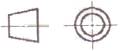
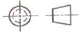
(정답률: 72%)
17. 코일 스프링 제도하는 방법을 설명한 것으로 틀린 것은?
- 스프링은 일반적으로 하중이 걸린 상태로 도시한다.
- 종류와 모양만을 도시할 때에는 재료의 중심선만 굵은 실선으로 그린다.
- 요목표에 단서가 없는 코일 스프링은 오른쪽으로 감은 것을 나타낸다.
- 코일 부분의 양 끝을 제외한 동일 모양 부분의 일부를 생략할 때에는 생략하는 부분의 선지름의 중심선을 가는 1점 쇄선으로 표시한다.
(정답률: 47%)
18. 파단선의 용도를 설명한 것으로 가장 적합한 것은?
- 단면도를 그릴 경우 그 절단위치를 표시하는 선
- 대상물의 일부를 떼어낸 경계를 표시하는 선
- 물체의 보이지 않은 부분의 형상을 표시하는 선
- 도형의 중심을 표시하는 선
(정답률: 58%)
19. 그림과 같은 제3각법 정투상도에서 우측면도로 가장 적합한 것은?
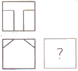
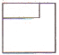
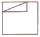
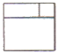
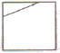
(정답률: 59%)
20. 기계제도에서 구의 지름을 표시하는 치수 보조 기호는?
- ø
- R
- Sø
- SR
(정답률: 72%)
21. 단면도의 표시방법에서 그림과 같은 단면의 종류는?
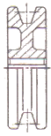
- 온 단면도
- 한쪽 단면도
- 부분 단면도
- 회전 도시 단면도
(정답률: 58%)
22. 다음 도면에서 표면의 결 도시 기호가 잘 못 기입된 곳은?
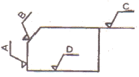
- A
- B
- C
- D
(정답률: 65%)
23. 데이텀 표적이 영역일 때 표시하는 기호는 어느 것인가?
(정답률: 50%)
24. KS 기어 제도의 도시방법 설명으로 올바른 것은?
- 잇봉우리원은 가는 실선으로 그린다.
- 피치원은 가는 1점 쇄선으로 그린다.
- 이골원은 굵은 1점 쇄선으로 그린다.
- 잇줄 방향은 보통 2개의 가는 1점 쇄선으로 그린다.
(정답률: 61%)
25. 도면에 ø100 H6/m6 로 표시된 끼워 맞춤의 종류는?
- 구멍 기준식 억지 끼워 맞춤
- 구멍 기준식 중간 끼워 맞춤
- 축 기준식 중간 끼워 맞춤
- 축 기준식 억지 끼워 맞춤
(정답률: 52%)
26. 입도가 작고, 연한 숫돌을 작은 압력으로 가공물의 표면에 가압하면서 가공물에 이송을 주고, 동시에 숫돌에 진동을 주어 표면 거칠기를 높이는 가공 방법은?
- 래핑
- 호닝
- 슈퍼피니싱
- 배럴 가공
(정답률: 57%)
27. 수평 밀링 머신의 플레인 커터 작업에서 하향 절삭과 비교한 상향 절삭의 특징이 아닌 것은?
- 커터의 수명이 짧다
- 절삭된 칩이 이미 가공된 면 위에 쌓인다.
- 절삭열에 의한 치수 정밀도의 변화가 작다
- 표면 거칠기가 나쁘다.
(정답률: 51%)
28. 선반의 베드에 대한 설명으로 맞지 않는 것은?
- 베드의 재질은 특수강으로 경도와 인성이 커야 한다.
- 베드는 강성이 크고, 방진성이 있어야 한다.
- 내마모성이 커야 한다.
- 정밀도와 진직도가 좋아야 한다.
(정답률: 37%)
29. 사인바의 사용 용도로 가장 적합한 것은?
- 게이지블록을 이용하여 각도 측정
- 게이지블록을 이용하여 진원도 측정
- 게이지블록을 이용하여 유효경 측정
- 표면거칠기 측정
(정답률: 75%)
30. 자생작용을 하는 공구로 가공하는 것은?
- 스피닝 가공
- 연삭 가공
- 선반 가공
- 레이저 가공
(정답률: 58%)
3과목: 기계공작법
31. 초경합금 모재에 TiC, TiCN, TiN, Al2O3등을 2~15μm의 두께로 증착하여 내마모성과 내열성을 향상시킨 절삭공구는?
- 세라믹(ceramic)
- 입방정 질화붕소(CBN)
- 피복 초경합금
- 서멧(cermet)
(정답률: 33%)
32. 선반에서 테이퍼(taper) 가공을 하는 방법으로 옳지 않은 것은?
- 심압대의 편위에 의한 방법
- 주축을 편위시키는 방법
- 복식 공구대의 회전에 의한 방법
- 테이퍼 절삭장치에 의한 방법
(정답률: 50%)
33. 다음 중 한계 게이지의 특징이 아닌 것은?
- 제품 사이의 호환성이 있다.
- 조작이 다소 복잡하므로 숙련된 경험이 필요하다.
- 제품의 실제 치수를 읽을 수 없다.
- 대량 생산시 측정이 간편하다.
(정답률: 53%)
34. 캠(CAM)이나 유압 기구 등을 이용하여 부품가공을 자동화한 선반은?
- 공구선반
- 자동선반
- 모방선반
- 터릿선반
(정답률: 73%)
35. 가공 공구와 가공물의 운동 관계를 설명한 것이다. 다음 내용과 관계없는 가공 방법은?
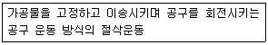
- 밀링
- 보링
- 선삭
- 호닝
(정답률: 42%)
36. 다음 가공의 종류 중 구멍의 내면에 암나사를 내는 작업은?
- 리밍(reaming)
- 보링(boring)
- 태핑(tapping)
- 스폿 페이싱(spot facing)
(정답률: 66%)
37. 탁상 드릴링 머신에서 일반적으로 가장 많이 사용되는 주축 회전 변속장치는?
- V벨트와 단차
- 원추형 풀리와 벨트
- 기어 변속장치
- 평벨트와 단차
(정답률: 47%)
38. 유동형 칩이 발생하기 쉬운 조건에 맞지 않는 것은?
- 윗면 경사각이 클 경우
- 절삭속도가 낮은 경우
- 절삭 깊이가 작은 경우
- 윗면의 마찰이 작은 경우
(정답률: 60%)
39. 절삭유제를 사용하는 목적이 아닌 것은?
- 세척작용
- 윤활작용
- 냉각작용
- 마찰작용
(정답률: 70%)
40. 밀링머신 중 공구를 수직 이동시켜 공구와 공작물의 상대 높이를 조절하며, 구조가 단순하고 튼튼하여 중절삭이 가능하고, 주로 동일 제품의 대량생산에 적합한 밀링 머신은?
- 생산형 밀링머신
- 만능 밀링머신
- 수평 밀링머신
- 램형 밀링머신
(정답률: 60%)
4과목: CNC공작법 및 안전관리
41. 연삭숫돌의 입자가 탈락되지 않고 마모에 의해서 납작하게 둔화된 상태를 글레이징(glazing)이라고 한다. 어떤 경우에 글레이징이 많이 발생하는가?
- 숫돌의 원주속도가 너무 작다.
- 숫돌의 결합도가 너무 높다.
- 숫돌 재료가 공작물 재료에 적합하다.
- 공작물의 재질이 너무 연질이다.
(정답률: 43%)
42. 밀링 머신의 테이블 이송속도를 구하는 공식은?(단, Ff : 테이블 이송속도, fr : 커터의 리드, fz : 밀링 커터의 날 1개마다의 이송(mm), z : 밀링 커너의 날 수, n : 밀링 커터의 회전수, p :밀링 커터의 피치이다.)
- f = fz × z × n
- f = fz × fr × p
- f = fr × n × p
- f = fr × z × n
(정답률: 60%)
43. 복합형 고정 사이클(G70, G71)에서 사이클이 종료되면 공구가 복귀하는 지점은?
- 프로그램 원점
- 기계 원점
- 사이클 시작점
- 제 2 원점
(정답률: 44%)
44. CNC 선반에서 프로그램 G01 G99 X40. Z-20. F0.2 ; 에서 F0.2와 관계가 있는 것은?
- 절삭속도 일정제어
- 주축회전수 일정제어
- 분당 이송속도
- 회전당 이송속도
(정답률: 49%)
45. CNC 선반 프로그램 G32 X50. Z-30. F1.5 ; 에서 1.5가 뜻하는 것은?
- 나사의 길이
- 이송
- 나사의 깊이
- 나사의 리드
(정답률: 63%)
46. CNC용 DC모터로서 요구되는 특성이 아닌 것은?
- 가감속 특성 및 응답성이 우수해야 한다.
- 좁은 속도범위에서만 안정된 속도제어가 이루어져야 한다.
- 진동이 적고 소형이며 견고해야 한다.
- 높은 회전각 정도를 얻을수 있어야 한다.
(정답률: 60%)
47. 다음 중 주축의 회전 방향 지정이나 주축 정지에 해당하는 보조 기능이 아닌 것은?
- M02
- M03
- M04
- M⑤
(정답률: 43%)
48. 인서트 팁에서 노즈 반지름(Nose radius) R 에 대한 설명으로 가장 옳은 것은?
- 절입량이 작은 다음질 절삭에서 큰 노즈 반지름 R을 사용한다.
- 노즈 반지름 R이 클수록 표면조도는 불량해진다.
- 노즈 반지름 R이 클수록 공구의 수명은 단축된다.
- 노즈 반지름 R이 너무 커지면 저항이 증가하여 떨림이 발생한다.
(정답률: 45%)
49. CNC 공작기계가 작동 중 경보(alarm)가 발생한 경우 조치 사항으로 옳지 않은 것은?
- 비상스위치를 누르고 작업을 중지
- 알람(alarm) 메시지를 확인하고 경보를 해제
- 중대한 결함이 발생한 경우 전문가와 협의
- 아무런 조치를 하지 않고 작업을 계속 진행
(정답률: 83%)
50. 머시닝 센터에서 작업 전에 육안 검사사항이 아닌 것은?
- 전기회로는 정상 상태인가?
- 공작물은 정확히 고정되어 있는가?
- 윤활유 탱크에 윤활유 량은 적당한가?
- 공기압은 충분히 유지하고 있는가?
(정답률: 68%)
51. 머시닝센터에서 X-Y 평면을 지정하는 G 코드는 무엇인가?
- G17
- G18
- G19
- G20
(정답률: 67%)
52. 다음은 범용 선반 가공시의 안전 사항이다. 틀린 것은?
- 홈깍기 바이트는 가급적 길게 물려서 사용한다.
- 센터 구멍을 뚫을 때에는 공작물의 회전수를 빠르게 한다.
- 홈깍기 바이트의 길이 방향 여유각과 옆면 여유각은 양쪽이 같게 연삭한다.
- 양 센터 작업시 심압대 센터 끝에 그리스를 발라 공작물과의 마찰을 적게 한다.
(정답률: 61%)
53. 밀링 작업시 안전사항 중 잘못된 것은?
- 칩을 제거할 때에는 브러시를 사용한다.
- 가공을 할 때에는 보안경을 착용하여 눈을 보호한다.
- 회전하는 커터에 손을 대지 않는다.
- 절삭 중에는 면장갑을 착용하고, 측정할 때에는 착용하지 않는다.
(정답률: 83%)
54. CNC 선반에서 G97 S1200 M03 ; 으로 일정하게 제어되고 있는 프로그램에서 지름 45 mm의 홈을 가공한 후 2회전 일시정지(Dwell)아려고 한다. 다음 프로그램 중 틀린 것은?
- G04 X0.1 ;
- G04 U0.1 ;
- G04 S100 ;
- G04 P100 ;
(정답률: 59%)
55. 공작물의 직경이 ø40 mm에서 절삭속도가 150 m/min인 경우 주축 회전수는 몇 rpm 인가?
- 1884
- 1910
- 1256
- 1194
(정답률: 45%)
56. 다음의 공구 보정 화면 설명으로 틀린 것은?
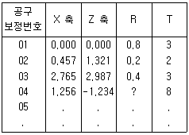
- X축 : X축 보정량
- Z축 : Z축 보정량
- R : 공구 날끝 변경
- T : 공구 선택 번호
(정답률: 39%)
57. 머시닝센터로 가공할 경우 고정 사이클을 취소하고 다음 블록부터 정상적인 동작을 하도록 하는 것은?
- G80
- G81
- G98
- G99
(정답률: 49%)
58. 다음 중 CAD/CAM 시스템의 하드웨어에 해당하는 것은?
- 운영 체제(OS)
- 입ㆍ출력 장치
- 응용 소프트웨어
- 데이터베이스 시스템
(정답률: 49%)
59. 다음 그림에서 절대 좌표계를 사용하여 점 A(10,20)에서 점 B(30,20)로, 시계방향 원호를 가공할 때 올바른 프로그램은?
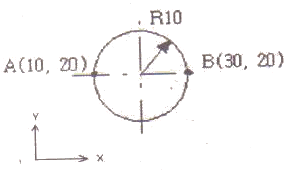
- G02 X30. R10. ;
- G03 X30. R10. ;
- G02 I-10. ;
- G03 I-10. ;
(정답률: 56%)
60. CNC 공작 기계에서 자동 원점 복귀시 중간 경유점을 지정하는 이유 중 가장 적합한 것은?
- 원점 복귀를 빨리 하기 위해서
- 공구의 충돌을 방지하기 위해서
- 기계에 무리를 가하지 않기 위해서
- 작업자의 안전을 위해서
(정답률: 67%)